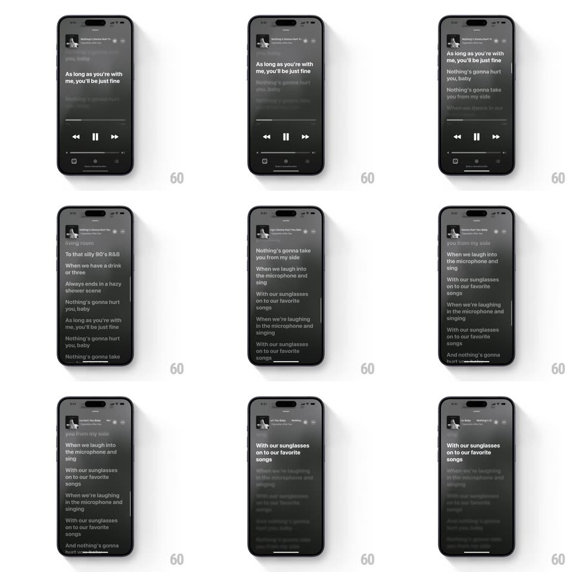

Media
Frame-by-frame

Rebuild this interaction 1:1: Apple Music's lyrics view - the now-playing screen crossfades into time-synced lyrics where the active line is bright and large while context lines blur and dim.

Rebuild this interaction 1:1: Apple Music's lyrics view - the now-playing screen crossfades into time-synced lyrics where the active line is bright and large while context lines blur and dim. ## Integration Integration: stack-agnostic spec - springs given as stiffness/damping, timed motions as duration + curve; map every value to your framework and animation library of choice. ## Scene The player (blurred album-art background, transport controls, mini header) transitions into a full lyrics view: song header top-left, then a scrolling column of lyric lines. The currently sung line renders full-opacity white and larger; past and upcoming lines step down in opacity and sharpness with distance from focus. ## Motion spec Pattern: focus-tracked lyric scroll. - Player to lyrics: the album blur stays continuous while controls dissolve (250ms) and the first lines slide up from below (spring ~320/26, 40ms stagger per line). - As the song progresses, the lyric column auto-scrolls so the active line rests just above center (scroll spring ~260/24, no hard jumps). - The active line scales 1.0 to 1.06 and fades to 100% opacity (300ms, ease-out); the previous line simultaneously dims to ~55% and blurs ~2px; lines two away sit at ~30% opacity, ~4px blur. - Manual scroll takes over instantly (1:1), the scroll hint bar appears on the right; after ~3s idle the column eases back to the active line. - Tap a line: a light haptic, the line flashes to full opacity, and playback seeks - the column re-centers with the same spring. - Back to player: lines cascade down and out (30ms stagger) as the transport controls fade back in. ## Calibration - The focus gradient (opacity + blur + scale) is the entire effect - tune the three bands so the active line pops without neighbors becoming unreadable. - Auto-scroll lands before the vocal starts, not after: lead the timestamp by ~150ms. ## Reduced motion Lines crossfade without blur or scale. ## Don't miss - Text is left-aligned, heavy weight, generous line spacing - not centered karaoke style. - The blurred album backdrop persists underneath everything; lyrics never sit on flat black.